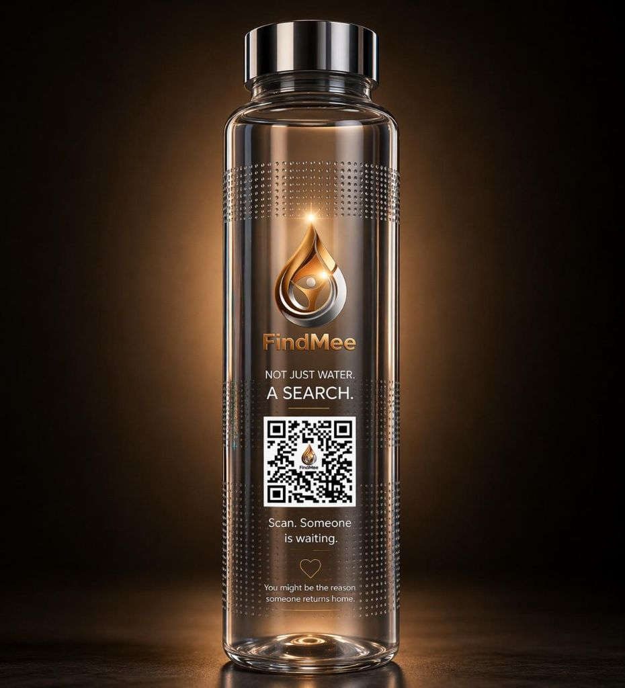
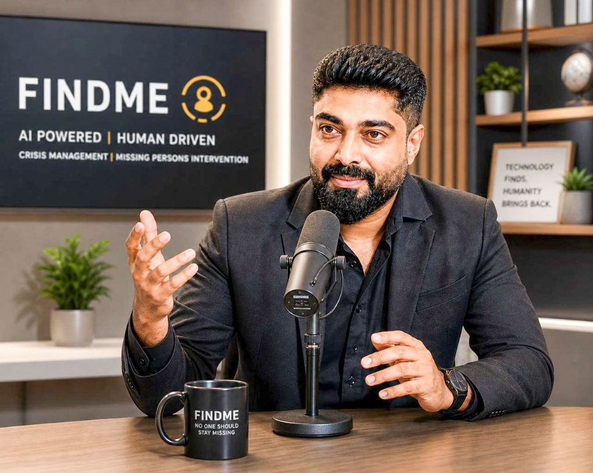

How a data science director spent eighteen years learning to solve the world's largest business problems — then walked away to solve one that couldn't be measured in revenue.


JV speaks the way he thinks — in systems. He has spent nearly two decades translating chaos into architecture inside the world's largest organizations. What changed, he says, was the question he was solving for.
Eighteen years across consulting, analytics, customer experience and enterprise transformation. Fortune 500 boardrooms where decisions moved in millions of dollars and thousands of moving parts.
An IIM alumnus. A management consultant fluent in the discipline of turning fragmented data into systems that work.
The boardroom has been replaced by India's streets. Enterprise dashboards by missing-person photographs. Business KPIs by a far more human measure of success: whether someone gets found.
Same operator. Same discipline. A radically different outcome.
JV spent nearly two decades operating at the intersection of consulting, management, analytics and large-scale business transformation. His career took him into the boardrooms of some of the world's largest organizations, where operational discipline and complex decision-making are measured in millions of dollars and thousands of moving parts.
He learned to take fragmented information, complex operations and seemingly impossible business problems, and turn them into systems that work.
But his most personal — and most ambitious — chapter did not begin in a boardroom.
What if the same principles used to connect data, people and operations inside the world's largest companies could be redirected toward a problem where the outcome is not revenue — but a human life?— JV, on the question that became FindMee
This is not a statistic. It is a national emergency — one that has been quietly running in the background of the country's growth story for decades.
After a First Information Report is filed, citizen participation remains fragmented. Millions of people may want to help — but have no simple way to know whom to look for, or how to report what they see.
For someone who had spent years building sophisticated enterprise systems, the gap was striking. India does not lack people. It lacks a mechanism to mobilize the attention of those people at the right moment.
That question — what is the mechanism? — became the beginning of FindMee.
FindMee, built under HopeViara, is an FMCG and technology-led initiative designed to turn an everyday consumer touchpoint into an opportunity to help find a missing person.
We don't ask people to search for missing persons.— JV, on the FindMee mechanic
We bring missing persons to millions of people —
every single day.
Premium glass, mineral water, ₹1 per bottle routed to search operations.
A real missing-person profile, with AI-enhanced and age-progressed visuals.
If the consumer recognizes someone, one tap files a location-stamped lead.
Reports are analysed against records, face-matched, and routed to authorities.
At its heart, FindMee reflects the same systems-thinking that defined JV's corporate career. Fragmented data becomes intelligence. Disconnected touchpoints become a network. Information becomes action. And scale is designed into the model from the beginning.
Technology, however, is not the story. People are.
It is measured in three numbers.
From business transformation to human transformation.
From data to action.
From one idea to a movement.